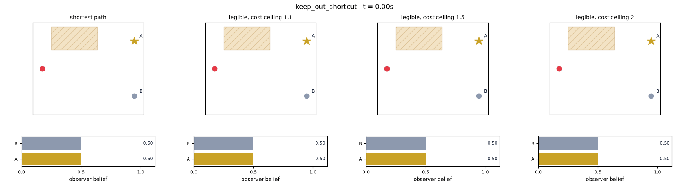
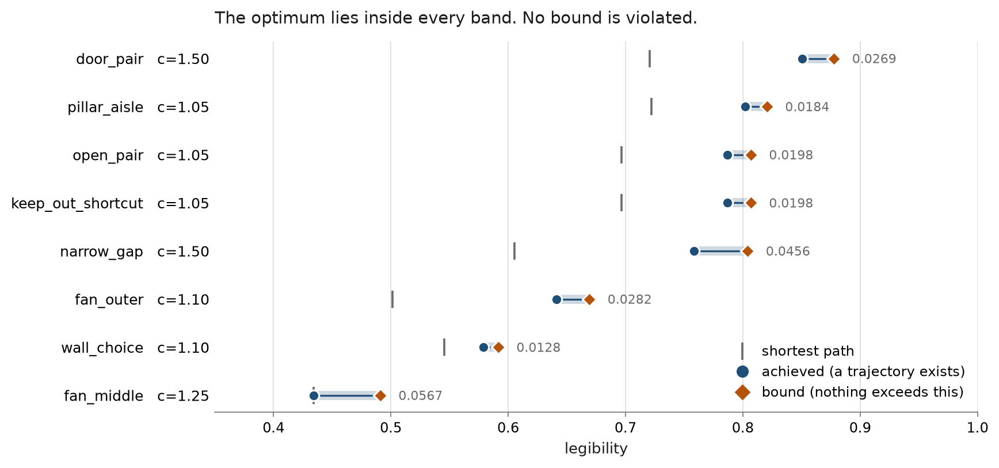

Teaching robots to say what they mean, and to know when they can't.
I build the systems that make robots worth trusting: benchmarks that prove how LLM planners fail, verifiers that stop unsafe plans before hardware moves, and humanoids that communicate their intentions clearly. MSc AI & Robotics (Commendation), University of Hertfordshire.
Engineer first. Researcher by conviction.
I work at the boundary between robotics research and shipped engineering. My academic work asks how humanoid robots should communicate so that people trust them appropriately, not too little, not too much. My applied work has been building the embedded systems and edge AI pipelines that make robots, and the products around them, actually work in the field.
That combination shapes how I think about every project: a result only matters once it survives contact with real hardware, real users, and conditions nobody designed for in the lab. I bring the same standard to a fresh dataset on a humanoid platform as I do to firmware shipping in a safety-critical product.
I'm currently pursuing PhD research in human-robot interaction and AI reliability, while remaining open to robotics and AI engineering roles where that same standard of rigor is valued.

MSc AI & Robotics
BEng Mechatronics Engineering
On the bench right now
Active research, updated as it lands. The latest commit is fetched live from GitHub, so the freshness claim checks itself.
plan-failure-bench
Sixty trap-labelled instructions across two symbolic environments, each carrying a machine-checked proof of its own ground truth, re-verified by 548 tests on every commit. The fixed-prompt grid is complete: 18 runs, four models, both environments, both conditions, every record committed. Public as a citable preprint, DOI 10.5281/zenodo.21756817.
What the grid found
The headline result belongs to the frontier reasoning model, which repeats every headline count under full semantic obfuscation on both environments, 13 of 13 traps detected with zero false positives, and fails a single sequencing seed identically in each condition, a blemish only the confusion matrix can see. Smaller models split the other way: one never refuses anything, one refuses on surface semantics alone, and the 70B model's five-sample cell shows its instability sitting at the detection boundary rather than in a stable wrong answer.
Every citation in the paper has been checked against the cited paper's body rather than its abstract, with the record of those checks published as an appendix. Next on the bench: the statistics scope decision, and sampling the remaining cells.
legible-motion-bench
A robot heading for one of several goals is ambiguous for the first few seconds, and that is exactly when people hesitate or step into its path. Deviating early buys clarity and costs path length, and sometimes the clearest way to signal a goal is the way the robot is not allowed to go. This measures that three-way trade exactly, with no human rater and no model judging anywhere in the scoring loop. Legibility is Dragan's, formalised at HRI 2013; what is mine is the instrument.

The three measurements
| Path budget | Legibility | Cost paid | Keep-out entries |
|---|---|---|---|
| shortest path | 0.7200 | 1.0000 | 1 |
| 5 per cent | 0.7995 | 1.0500 | 1 |
| 10 per cent | 0.8180 | 1.0999 | 0 |
| 50 per cent | 0.8658 | 1.5000 | 0 |
The cost paid sits on the budget in every row, so the constraint binds and the curve is the trade rather than an artefact of where the search stopped. Safety moves along it: at a five per cent budget the clearest trajectory still crosses the zone, and only at ten per cent does it buy its way out.
| Over 40 decodes each | Qwen 2.5 7B | Llama 3.3 70B |
|---|---|---|
| called legible by the model | 40 | 40 |
| physically possible | 26 | 29 |
| clearer than the shortest path | 10 | 20 |
| over the stated path budget | 9 | 15 |
| entered a keep-out zone | 7 | 7 |
Every one of the 80 decodes claimed to be legible, including the 25 that were not physically possible. In the world built so that clarity and the keep-out zone conflict, both models beat the shortest path on 5 of 5 samples and both entered the zone on 5 of 5.
| Budget in the prompt | Qwen median cost | Qwen over budget | Llama median cost | Llama over budget |
|---|---|---|---|---|
| 10 per cent | 1.1663 | 17 | 1.2817 | 30 |
| 25 per cent | 1.1588 | 9 | 1.2817 | 15 |
| 50 per cent | 1.1712 | 3 | 1.2817 | 10 |
| 100 per cent | 1.1709 | 0 | 1.2817 | 0 |
Forty decodes at each budget, per model. The budget nearly doubles; the smaller model's median cost moves by 0.012 and the larger one's does not move at all. That is the distribution repeating rather than a quirk of the median: across about thirty feasible decodes at each budget the larger model returns only thirteen to sixteen distinct trajectories, clustering on the same modal cost every time. The falling violation counts are the line moving, not the models complying. Where the optimiser sits exactly on the budget in every row above, because for a planner it is a constraint, for both models it is text.
Two models at one temperature is a pilot, not a finding, and the framing is not settled: the founding paper already notes that legibility pushes trajectories towards obstacles, so this narrows existing work rather than opening new ground. Next on the bench: a third model, and what can honestly be said about whether this metric measures what people actually perceive.
legibility-bounds
The benchmark above measures what a planner achieved. This proves what nothing could achieve. For a world, a path budget and a stated observer it returns two numbers: a trajectory that exists, and a wall no trajectory within the budget can cross. The gap between them is reported rather than hidden, which finally separates the question a scenario designer actually asks, is this world hard, from the one they can currently answer, did my planner do badly in it.

The certified intervals
| World | Budget | Achieved | Bound | Gap |
|---|---|---|---|---|
| fan_middle | 1.25 | 0.4343 | 0.4909 | 0.0567 |
| narrow_gap | 1.50 | 0.7584 | 0.8047 | 0.0462 |
| fan_outer | 1.10 | 0.6410 | 0.6692 | 0.0282 |
| door_pair | 1.50 | 0.8507 | 0.8777 | 0.0270 |
| wall_choice | 1.10 | 0.5787 | 0.5931 | 0.0144 |
All 32 world and budget pairs hold, with zero violations. Each row shows the world at the budget where its interval is widest; the narrowest gap anywhere in the suite is 0.0065. The upper end is the half no search can supply, because it quantifies over every admissible trajectory rather than the ones somebody tried, and no better optimiser weakens it.
The lower end is constructed rather than searched for, threaded from the bound's own high-belief cells and pulled back until it fits the budget, and it beats the vendored local search in 13 of 32 cases by up to 0.1485. The same argument certifies what safety costs: comparing two searches cannot establish that a constraint costs anything, because the constrained search may simply have been worse, so 3 of 8 keep-out pairs certify a positive price and the other 5 certify nothing and are reported as nothing.
Where the remaining width lives was measured rather than argued: refining the lattice closes 55 to 79 per cent of it, and what survives is one loose constant in the obstacle argument, sampled at a factor of 3.7 looser than the worst real case. That is named in the README as the highest-leverage improvement outstanding. The honest ceiling on all of it: the observer model is exactly reproducible and has never been validated against people, so these are certified bounds on a stated objective, not on what a human watching would actually infer. Now written up as a six-page draft, readable here; the venue is not yet decided.
Two research lines: reliable planners, legible robots
How language model planners fail, measured against machine-checked ground truth; and how humanoid robots should communicate so people can calibrate their trust.
plan-failure-bench: A Machine-Checkable Benchmark of How Language Model Planners Fail
Every instruction either admits a valid plan or plants exactly one trap, and every ground-truth label carries a mechanical proof re-verified in CI on each commit. A deterministic checker, differentially tested against an independent PDDL toolchain, scores every response with no human or LLM judge anywhere, and detection is never reported without its paired false positive count. The headline artefact is the confusion matrix between planted trap and observed verdict.
Across an 18-run grid over four models, the models fail in distinct, stable ways: a frontier reasoning model survives full semantic obfuscation on both environments, one sequencing seed short of perfect, while smaller models split between silent compliance and surface-anchored refusal.
Enhancing Human-Robot Companionship: Comparing Verbal and Non-Verbal Communication Cues in Humanoid Robots


I built a full sim-to-real pipeline across both the iCub and JD humanoid platforms, developing a high-fidelity Isaac Sim digital twin and engineering the hardware integration for both robots. The formal trust-calibration study, comparing verbal and gestural communication strategies for conveying robot need-states, was conducted on the JD platform with 20 participants in a counterbalanced, RoSAS-validated design.
Verbal communication produced significantly clearer intent conveyance than gestural cues alone, with comparable engagement and warmth across both modalities, evidence that hybrid verbal-gestural strategies are the right design target for companion robots.
Built, deployed, measured
Every project here is backed by committed data and code a stranger can re-run, and says in its own words where its claims stop. Two are deployed in the field: firmware in a commercial intrusion-detection prototype, and a portal running an institute day to day. Nine of the ten also have a short plain-language guide, written for readers outside the field.
legibility-bounds: Proving What No Robot Can Achieve
legible-motion-bench: What Clarity Costs
plan-failure-bench: How LLM Planners Fail
llm-nav-shield: Detect, Recover, or Halt
toolcall-contract: Tool Calls That Silently Aren't Right
ROS2 Autonomous Navigation & Deterministic Planning
exact-predicates: When Floating Point Lies
ROS2 LLM Safety Verifier
ESP32-CAM Motion Detector
Safina Portal: School Management System
Tools I ship with
- C++20
- Python
- ROS2 (Nav2, Plugin Dev)
- Git & CI/CD
- Docker
- Isaac Sim
- MuJoCo
- Gazebo
- Unity
- Sim-to-Real Transfer
- PyTorch
- TensorFlow
- TensorRT
- Computer Vision
- LLM Integration
- iCub & JD Humanoid
- Unitree Go1
- Jetson Nano
- ESP32 & LoRa
- Bare-Metal C/C++
From lab to deployed hardware
Visiting Lecturer, AI & Robotics
- Designed an ML curriculum for 30+ students; teams achieved 92% model accuracy with 28% average error reduction on custom classification tasks.
Embedded Systems Engineer
- Engineered deterministic C++ firmware for real-time image processing on ESP32 for a commercial intrusion-detection prototype.
- Architected a LoRa mesh protocol achieving under 3 second alert latency across 100m field trials in a safety-critical deployed product.
Robotics Integration Specialist
- Architected a gesture recognition and motion planning pipeline in Unity/C++ for the iCub humanoid, reducing user frustration by 40% and improving HRI task efficiency by 25%.
- Deployed PyTorch-based non-verbal communication models onto iCub's real-time control loop and measured their communicative effect: a significant clarity effect (4.9 versus 5.8 on a 1 to 7 scale, p = 0.017, d = 0.58), with engagement statistically comparable across modalities.
Research Associate
- Fine-tuned TensorFlow LLMs for real-time robotics inference on the Unitree Go1 quadruped, cutting inference latency by 29% across 200 trials.
- Integrated optimised models into the control loop, improving platform responsiveness by 35% with 99.5% runtime stability.
Embedded Systems Intern
- Optimised bare-metal C firmware for embedded controllers, achieving 40% faster processing and 98% reliability across 100+ safety-critical test cycles.
Research output
Enhancing Human-Robot Companionship: Comparing Verbal and Non-Verbal Communication Cues in Humanoid Robots
plan-failure-bench: A Machine-Checkable Benchmark of How Language Model Planners Fail
Certified Bounds on Achievable Legibility under a Path Cost Budget
In the room, and what they say

AI & Robotics in Education Conference

Hands-On Robotics & ML Workshop
Let's build
something real.
Open to PhD research collaboration in HRI and AI reliability, and to robotics and AI engineering roles in the UK, EU, and USA.